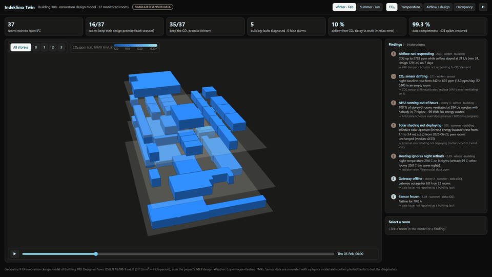
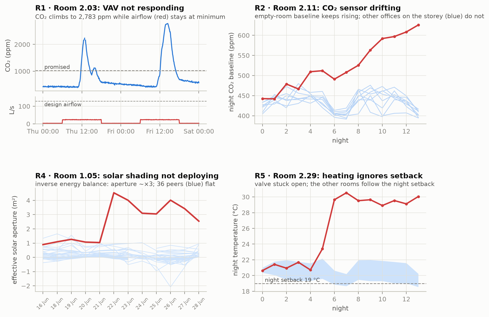
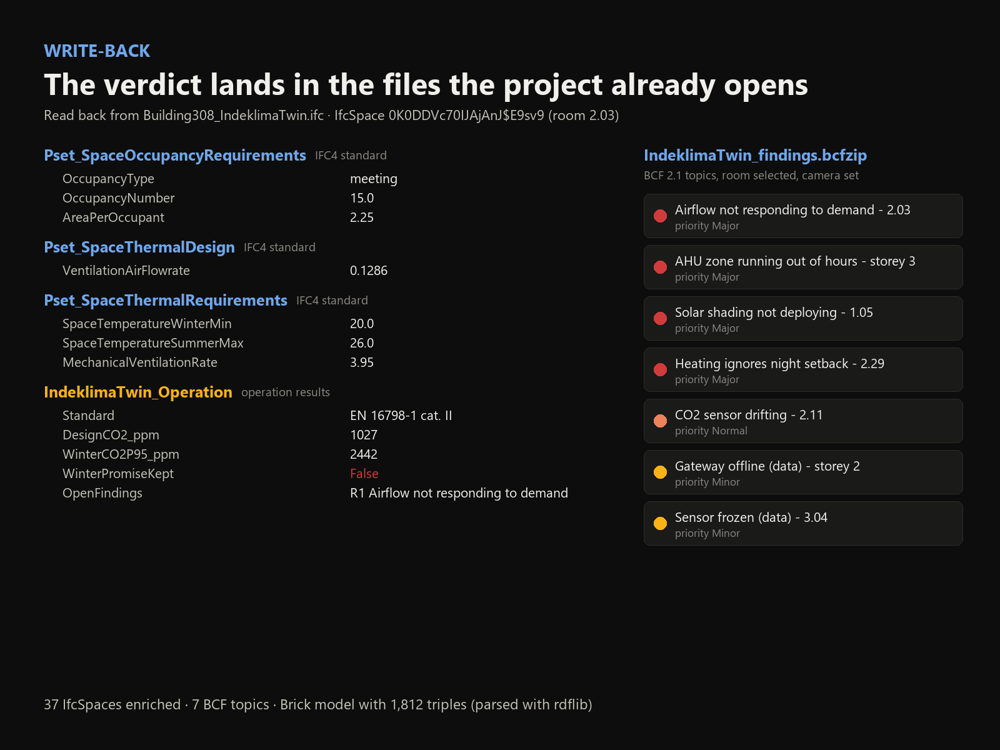

Indeklima Twin reads that promise from the building's IFC model and MEP design, checks the sensor data against it room by room, explains every broken promise, and writes the answer back into IFC, BCF and Brick.
The MEP engineer sized every room for a number of people and an outdoor-air rate (EN 16798-1, category II). From those two numbers physics gives the CO₂ level the room should never exceed. That is the promise. Move the sliders.
Defaults = meeting room 2.03. Drop the delivered airflow to 19 % and you get what its stuck damper did.
Each dot is a room: the CO₂ its own design promises, against what the sensors measured (95th percentile, occupied hours). A generic "CO₂ above 1,000 ppm" alarm would flag the wrong rooms. Click a dot to open its sensor history.
The 3D dashboard is built straight from the IFC spaces. Storeys explode apart, rooms colour by CO₂, temperature, airflow-vs-design or occupancy, and a time slider replays two weeks. Click any room for its promise card.

Runs in the browser (Three.js, WebGL). Open full screen ↗
Five rule families, each showing what a commissioning engineer would want to see before sending a technician. Data problems are kept apart: a frozen sensor never sends anyone to a healthy damper.
Share of occupied hours above 26 °C. The dashed line is the Danish practice limit (100 h/yr ≈ 5 %). Red marks the room whose solar shading stopped deploying.
The VAV cooled harder and hid the temperature rise, so a peak-temperature rule missed it. An inverse daily energy balance did not: the room's effective solar aperture tripled overnight while 36 peers stayed flat.

An MCP server exposes the twin to any AI assistant (Claude, Copilot, IDE agents) through seven read-only tools. Below is a real recorded session, replayed word for word: the question, the tools Claude chose, and its answer.
building_overview · list_rooms · room_promise · list_findings · room_timeseries · query (sandboxed SQL) · export_bcf
{"mcpServers": {"indeklima-twin": {
"command": "python",
"args": ["src/mcp_server.py"]}}}
SQL runs on an in-memory copy with file access and configuration locked. Writes and file reads are refused, and the test suite proves it through the official MCP client.
The sensor feed comes from a physics model (CO₂ and moisture mass balance, a thermal model, VAV control, Copenhagen weather) with seven planted faults. The detectors never see the truth. Five of the 16 seeds were held out and never used while designing the rules.
Rows are independent simulation runs (different occupancy, noise, sensor offsets, message loss). Outlined = held-out seed.
No new platform to adopt. Results go back into the open formats the project already opens.
Standard property sets (Pset_SpaceOccupancyRequirements, Pset_SpaceThermalRequirements, Pset_SpaceThermalDesign) plus one operations set with the measured performance.
Room selected, camera set, evidence and diagnosis in the description. Lands in the coordination tool like any clash.
Rooms, VAVs, AHU zones and every sensor point, each tied to its MQTT topic and IFC GlobalId. 1,812 triples, validated.

It doesn't replace anything. It connects the design the project already has to the sensors it installed later.
| Tool | When | Question it answers |
|---|---|---|
| IDA ICE, EnergyPlus, BSim | Design | Will this design work? (predictions from assumptions) |
| BMS alarms, IoT dashboards | Operation | Is CO₂ above a fixed threshold right now? |
| Digital-twin platforms | Operation | Where is each sensor in the model? |
| Indeklima Twin | Operation | Does each room still do what its own design promised, and if not, why? Answered in IFC, BCF and Brick. |
Bring an IFC model and a sensor export (MQTT, CSV or BMS trend logs). Python, DuckDB, IfcOpenShell. MIT licensed.